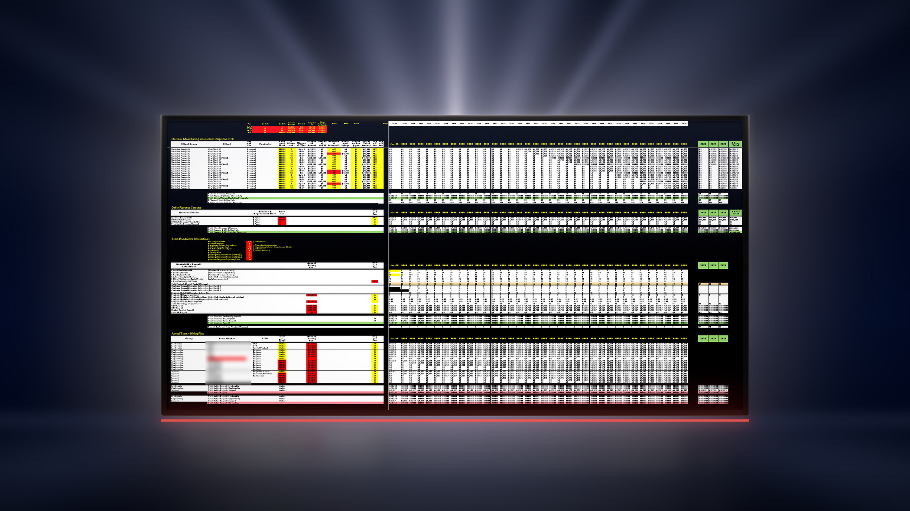

The Model Is Your Business Beacon
Most founders treat the financial model as an accounting artifact and a fundraising artifact, and they build it late. It is neither of those things, and late is the wrong time. The model is a dynamic operating document that points to your golden paths.
- 2 to 3 daysTo build a straw model from nothing
- 30 to 90 minutesThe entire weekly maintenance cost
- 1 dayMonth-end close to update the model
- 2,000 hoursWorkable hours in a year, and you have to pick

The Wrong Job for the Model
Most of the business leaders I talk to hold the same idea about what a financial model is for.
The model is for the accountant. The model is for the raise. And the model is not worth much time until you know enough about the business to make it "correct."
A financial model is not an accounting document. It is an operating document.
The correctness of the model is not the important part. The exercise of building it is. Obviously, the numbers you put in front of an investor, a lender, or an accountant have to be defensible, and none of this is permission to present guesses as facts. What it means is narrower. The accuracy of a working model is not the thing that produces the value. A solid model grounds your business in reality -- and if you want to run, you'll need some solid ground.
Building the model forces the crucial details of the business onto paper. Pricing, cost lines, headcount, timing, the order things have to happen in, and the assumptions holding all of it up. It also surfaces what I call the golden paths, the places where revenue or profit is high relative to the work and the expense that generate it. Those paths are hard to see from inside the business. They are obvious from inside the math.
Without that math written down, it is all assumptions, and most assumptions are wrong.
The Cost of Not Being Ready
The argument I get when I ask a founder why there is no model, or when I offer to help build one, is consistent. They are not ready for one. They do not know which assumptions to put in yet. They want to develop the product further first.
What I see in the same conversation is a person who is stressed and stuck. Decision paralysis is the normal state for a founder with no model to look at, because every choice has to be internally re-derived from nothing every time it comes up.
This is the clearest difference I have seen between founders who make it and founders who do not. I mean something specific by making it. The company gets funded, or the idea becomes self-sufficient. Not an exit. Baseline viability. If you started a business with the intention to generate revenue, but you have no measurement system in place for the revenue, you are not running a business. You are running an idea.
What the Model Actually Is
What Wolfpack delivers is a time-based monthly financial model and simulator tool which ties to a three-statement package: profit and loss, balance sheet, and cash flow.
The part most founders have never been shown is what the model does before there is any revenue. There is a headcount line on a P&L. If you are pre-revenue and you are not paying yourself, the time you put into the business is still going somewhere, and where it goes is shareholder equity. Set the model up, close the month, and you can see how many hours went in and what those hours were worth.
That is a use on its own, and seeing the work show up on a financial document instead of disappearing is a real encouragement in a stage of the business that offers very few. Investors read it as something else. A founder who can show that number is a founder who knows what the business is spending, and that level of awareness is uncommon enough to get noticed. It does not substitute for traction, and nobody has ever been funded on bookkeeping discipline alone.
The Weekly Look
I am not suggesting you open this every day and drive it toward accuracy. That is the job of your accountant, and of your investors, later, once the business is profitable enough for the precision to matter.
The suggestion is narrower. Build the robust version over two to three days, get a lot of assumptions into question, and then look at it once a week for somewhere between 30 and 90 minutes.
That weekly hour does four things. It keeps the whole financial picture loaded in your mind. It catches the ideas that have not made it onto the model's task list yet. It gives you somewhere to check off the wins. And it gives you somewhere to move the timelines when reality moves them. The last one is more satisfying than it sounds, and it is the reason the habit holds.
Month-End Close
One day a month, at close of month, updates the model. That is the entire ongoing cost of keeping it real.
Take the straw model to your accountant, ask for feedback, ask them to add to it, and ask for a month-end close. In my opinion, as an operator, a company without a month-end close is not yet operating as a business. It is still a startup, or still an idea, and the giveaway is not the revenue number. It is not understanding what a monthly close does to a development process.
Finding the Highest-Return Hour
The scarcest thing in a startup is time, and in a one-person company it is the only scarce thing that matters.
So you need a return figure on your own hours. You cannot produce that figure in your head. You will estimate it, you will be wrong, and you will be wrong in the direction of whatever you already wanted to work on.
The model produces the estimate instead: return by project, by product, and by sub-product. Once those numbers exist, the ordering is usually not a close call.
| Candidate feature | Est. annual return | Build time | Order |
|---|---|---|---|
| Feature A | ~$100,000 | 6 weeks | Build first |
| Feature B | ~$10,000 | 4 weeks | After |
| Feature C | ~$10,000 | 3 weeks | After |
Illustrative figures, not drawn from any engagement. The point is the ordering, not the amounts.
Time Tracking Is the Other Half
The model tells you what should be getting your hours. Time tracking tells you what actually got them. Neither half is worth much on its own.
At the end of the week you line the two up and look at whether the highest-return work got the most time. When it did not, the useful output is the reason. Something blocked it, and naming the blocker is the entire value of the exercise.
I have run without doing this. I know exactly what it produces, which is a confident feeling and a guess.
On the mechanics I hold a position that is not the common one. Being responsible for tracking your own time minute by minute is too distracting to be worth it, because interrupting the work to think about the work is counterproductive. An end-of-day estimate is better. An application that runs on your machine and records which projects you were actually in is better still. I am in the middle of rebuilding my own system on exactly that principle, so treat this as a practice I am improving rather than one I have finished.
Not a timesheet. Not surveillance. Just enough resolution to see where the week went.
There is a second use once you have employees. Show them the return. A team that can see why one project runs to completion before the others start argues about the order far less, and the projects they think are important usually are important. They are simply happening later this year. If you run profit first, the model is also where the reward attached to finishing gets calculated.
Infeasibility Is Not an Opinion
Founders and directors of small companies wear many hats and make many decisions. A maintained model helps a large share of those decisions make themselves.
I do not mean that it takes away free will. I mean that it shows infeasibility with math, and math is difficult to argue with. I call it infeasibility because I come out of statistics. If you think qualitatively, call it an extremely expensive path. The two phrases describe the same cell in the same spreadsheet.
The limit belongs right here. The model does not make the decision. It removes the argument about whether the decision is affordable, and it leaves the actual choice with you.
There are roughly 2,000 workable hours in a year. As much as you want to make every one of the business's ideas real, you have to pick.
Ten concurrent projects will not get finished. Two might, and only if the other eight are gone.
Most founders and solopreneurs are also the product developer, which is how you end up sitting there looking at the wall wondering what to do next. A maintained model answers that. It will tell you there are one or two viable ways to get the result you want out of this application, with this audience. If you are carrying ten other ideas, the ten have to be eliminated now, because the two will not finish while your attention is spread across twelve.
Quarters and Years, Not Weeks
A model does something to your sense of time that is worth naming. It takes work that feels granular and urgent and spreads it across quarters and years, which is the resolution history actually reads at.
In 2028, looking back at 2026, nobody asks what you finished in August. They ask what you finished in 2026. This is not really a philosophy. It is close to a fact about how results get evaluated after the fact.
So the thing a model settles is whether Projects X, Y, and Z being done by the end of August is materially different from the same three being done by the end of the year. Sometimes it is. The model shows you the actual difference rather than the felt one, and quarterly and annual goals stop being corporate furniture once you can see it.
The Model in the Room
The other reason to maintain the model is that it becomes a valuable collaboration tool in every stakeholder conversation. Development partners, investors, mentors, and the friends and family who are actually working on the project all benefit from a centralized model that maintains the continuity of ideas -- especially when the founder is actually playing some of these roles themselves!
Meetings get shorter. People stay more sane. Everyone (including the voices in your head) reads the same document, and the document already states past decisions, shows math on opportunities and risks, which assumptions have been made, and what has been shelved for later.
That last one matters most with a board. Board members are not in operations every day, so they arrive with ideas, and some of those ideas were ruled out three months ago. Showing why takes two minutes. Having the discussion again takes an hour. It runs in both directions, and the more valuable direction is the second one, which is telling a board member that the thing they are advising against is more profitable than they think. You cannot say either of those things credibly without the numbers behind them.
Do not leave it on the founder to produce that evidence on the spot. Maintaining the model along the way is what makes the evidence available on the fly. Don't say "just trust me, I did the math." Show them the math. Can you see the long-term time savings from skipping a debate that is already settled? Peace of mind, peace of board meeting. The model is the only way to do that.
A Worked Example, Hiring a Contractor
Say there is an initiative you could hand to an independent contractor. Estimate the return on the feature or the application that contractor would build, estimate how long it would take, and write both into the model rather than treating the decision as a one-off.
Then look at what sits in front of it and what blocks it. By the time it is in the model you will have done one of three things: ruled it out, refined it, or moved something else ahead of or behind it. All three are good outcomes, and none of them were available while the numbers were still in your head.
You Are Your Own Venture Capitalist
Even if you never intend to raise, you are still allocating capital, and the capital is your time. You are not going to reinvent how an application gets funded. So run the practice a competent venture capitalist would run, and one of their standing practices is a three-statement model, maintained weekly-ish.
A financial model/simulator is not paperwork you produce for somebody else. It is an instrument to steer by, and most founders are flying without one. Ryan Hickey
What the Model Does Not Do
-
Not accounting
It does not replace your books, your accountant, or the close process it feeds on. It sits on top of those and it depends on them being real.
-
Not accurate
A straw model is wrong in places by design. That is fine inside the business. It is not fine in a document handed to an investor without saying which numbers are estimates.
-
Not automatic
Between 30 and 90 minutes a week is the time investment to maintain and operate the model. A model nobody opens is worse than no model at all, because it is stale and it is still trusted.
Where to Start
The smallest next step is not a forecast and it is not a raise deck. Block two to three days and build the straw model: one P&L with your real cost lines, your headcount, and your honest guesses in the places you do not know yet.
Then put one hour a week on the calendar and keep it. That is the whole practice.
Wolfpack builds operational financial models for startups and small to medium businesses, and teaches the weekly cadence that makes them useful. If you want help building the first one, the fastest way to start is a call.
Every figure on this page comes from Ryan Hickey's own operating practice or from Wolfpack engagements described in general terms. No client is identified, and the returns in the feature comparison table are illustrative rather than taken from any engagement.